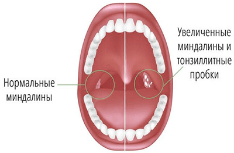

Поскольку миндалины являются первой линией обороны против атакующих горло бактерий, они часто воспаляются, особенно в раннем детстве.
СИМПТОМЫ
Признаками того, что у вашего ребенка может быть тонзиллит, являются:
• внезапный приступ храпа, шумного дыхания и беспокойного сна;
• жалобы на боль в горле;
• боль при глотании;
• скрипучий, хриплый голос;
• лихорадка и общее недомогание;
• увеличенные и чувствительные узелки под челюстной костью;
• заглянув в рот своему ребенку, вы, возможно, увидите, что миндалины красные, увеличенные и покрыты белым (или желтовато-белым) начетом;
• неприятный запах изо рта.

ЧТО МОЖЕТ СДЕЛАТЬ ВРАЧ
Красные, отечные, покрытые налетом, болезненные миндалины у ребенка в сочетании с лихорадкой и увеличенные лимфоузлы на шее, как правило, элементарная задача для врача. Это сочетание симптомов практически всегда означает бактериальный тонзиллит, и, если ребенок серьезно болен, как правило, назначается 10-дневный курс антибиотиков. Если ребенок чувствует себя не слишком плохо, миндалины не слишком большие и налета мало, это может означать менее опасную вирусную ангину и можно применить выжидательный подход. Если у врача есть подозрения, что причиной тонзиллита могут быть стрептококки, возможно, врач возьмет мазок из горла для проведения анализа на стрептококковую инфекцию. Если другие члены семьи или близкие друзья заболеют с похожими симптомами, они будут знать, что контактировали с носителем стрептококков, и можно будет сразу начать лечение. Единственным затрудняющим диагностику фактором при тонзиллите является то, что в некоторых случаях причиной его может быть вирус мононуклеоза, а вовсе не бактерии. При мононуклеозе возможны те же самые симптомы, что и при тонзиллите, лихорадка и увеличение шейных лимфоузлов.
СОВЕТ ДОКТОРОВ СИРС: КЛИНИЧЕСКИЙ ПРИЗНАК То, как ребенок ведет себя, имеет больше значения, чем то, как выглядит горло. Вирусные инфекции могут привести к тому, что горло будет иметь ужасный вид, но ребенок может выглядеть более здоровым, когда лихорадка спадает, и более больным, когда температура тела поднимается. Вот почему ваш врач будет полагаться на ваши наблюдения, насколько больным выглядит ребенок, и становится ли ему лучше или хуже. |
Вот пять дополнительных признаков, по которым можно отличить мононуклеозный тонзиллит от бактериального:
ЧТО ВЫ МОЖЕТЕ СДЕЛАТЬ
Помимо назначений врача, вот еще несколько домашних методов лечения ангины и тонзиллита:
Здоровье ребенка от докторов Сирс / Сирс У. и др.